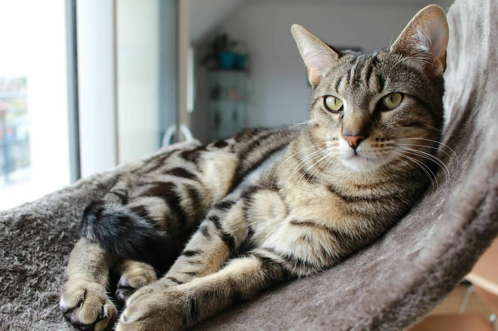
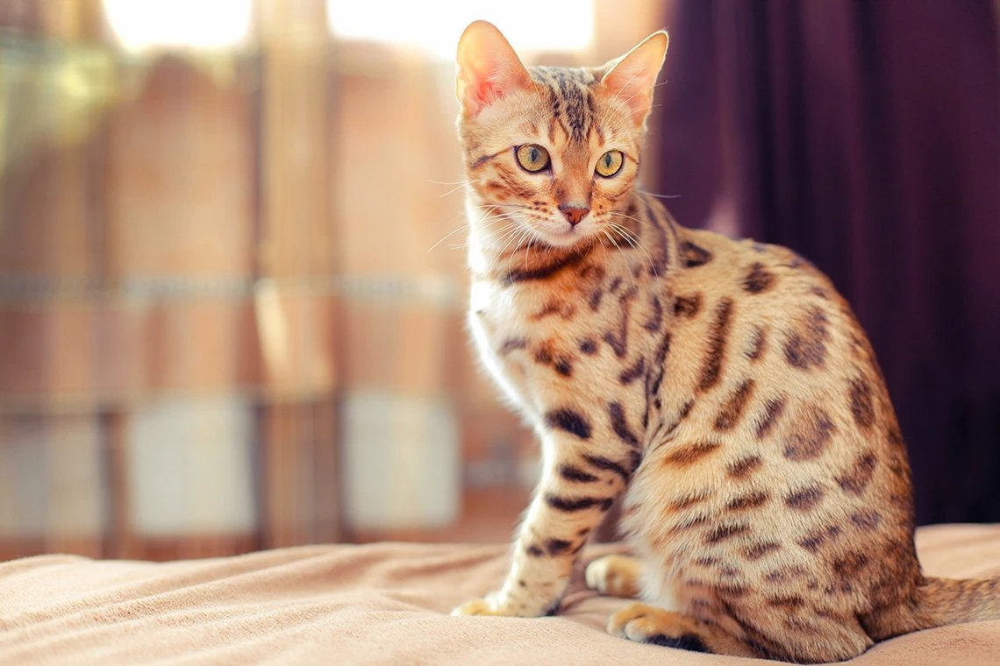

Короткошерстные породы кошек - группа короткошерстных пород кошек – самая многочисленная среди всех пород. В ней есть ласковые и покладистые компаньоны, «хищники» с непокорным характером и неуемным темпераментом, очаровательные флегматики и энергичные игруньи.
 